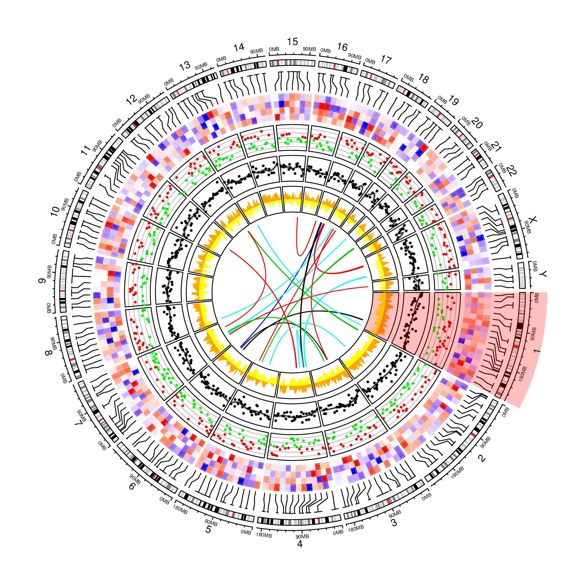

library(circlize)
circos.initializeWithIdeogram()
bed = generateRandomBed(nr = 200, nc = 4)
circos.genomicPosTransformLines(bed, posTransform = posTransform.default, horizontalLine = "top")
om = circos.par("track.margin")
oc = circos.par("cell.padding")
circos.par(track.margin = c(om[1], 0), cell.padding = c(0, 0, 0, 0))
f = colorRamp2(breaks = c(-1, 0, 1), colors = c("blue", "white", "red"))
circos.genomicTrackPlotRegion(bed, stack = TRUE, panel.fun = function(region, value, ...) {
circos.genomicRect(region, value, col = f(value[[1]]),
border = f(value[[1]]), lwd = 0.1, posTransform = posTransform.default, ...)
}, bg.border = NA, track.height = 0.1)
circos.par(track.margin = om, cell.padding = oc)
bed = generateRandomBed(nr = 500, fun = function(k) runif(k)*sample(c(-1, 1), k, replace = TRUE))
circos.genomicTrackPlotRegion(bed, ylim = c(-1, 1), panel.fun = function(region, value, ...) {
col = ifelse(value[[1]] > 0, "red", "green")
circos.genomicPoints(region, value, col = col, cex = 0.5, pch = 16)
cell.xlim = get.cell.meta.data("cell.xlim")
for(h in c(-1, -0.5, 0, 0.5, 1)) {
circos.lines(cell.xlim, c(h, h), col = "#00000040")
}
}, track.height = 0.1)
bed = generateRandomBed(nr = 500, fun = function(k) rnorm(k, 0, 50))
circos.genomicTrackPlotRegion(bed, panel.fun = function(region, value, ...) {
x = (region[[2]] + region[[1]]) / 2
y = value[[1]]
loess.fit = loess(y ~ x)
loess.predict = predict(loess.fit, x, se = TRUE)
d1 = c(x, rev(x))
d2 = c(loess.predict$fit + loess.predict$se.fit, rev(loess.predict$fit - loess.predict$se.fit))
circos.polygon(d1, d2, col = "#CCCCCC", border = NA)
circos.points(x, y, pch = 16, cex = 0.5)
circos.lines(x, loess.predict$fit)
}, track.height = 0.1)
bed_list = list(generateRandomBed(nr = 500, fun = function(k) runif(k)),
generateRandomBed(nr = 500, fun = function(k) runif(k)))
col = c("#FF000040", "#0000FF40")
circos.genomicTrackPlotRegion(bed_list, ylim = c(-1, 1), panel.fun = function(region, value, ...) {
i = getI(...)
if(i == 1) {
circos.genomicLines(region, value, area = TRUE, baseline = 0, col = "orange", border = NA, ...)
} else {
circos.genomicLines(region, -value, area = TRUE, baseline = 0, col = "yellow", border = NA, ...)
}
}, track.height = 0.1)
region1 = generateRandomBed(nr = 1000); region1 = region1[sample(nrow(region1), 20), ]
region2 = generateRandomBed(nr = 1000); region2 = region2[sample(nrow(region2), 20), ]
circos.genomicLink(region1, region2, col = sample(10, 20, replace = TRUE))
highlight.chromosome("chr1")
circos.clear()